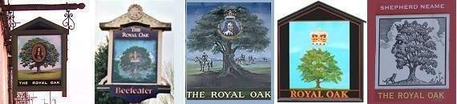
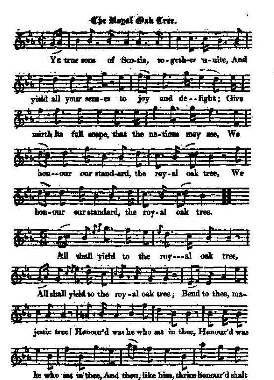
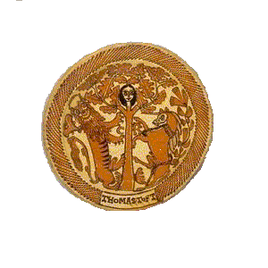
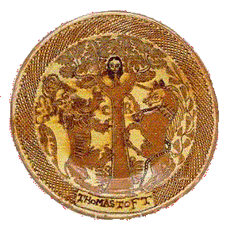
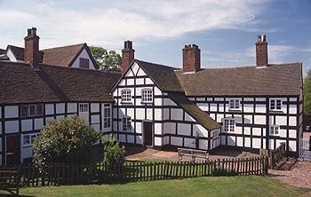
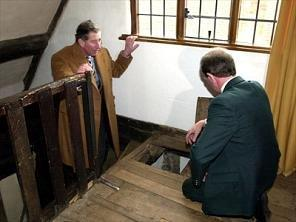
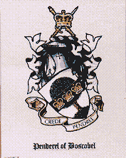

The Royal Oak tree
Le chêne royal
In honour of King Charles II - En l'honneur du roi Charles II
From "The True Loyalist", page 5, 1779
Tune - Melodie N°1"The Oak Tree"
from Hoggg's "Jacobite Relics" , vol. 1, N°6, 1819
Tune - Melodie N°2
"The Mulberry Garden"
Tune - Melodie N°3
"And the Dew flies over the Mulberry Tree" ("The Three Sisters")
Sequenced by Christian Souchon

|
"The air is (...) English (...) As here given, it is said to have been composed by
Charles Dibdin
, for Garrick's jubilee song of "The Mulberry Tree". But there is an air of that name as old as the days of Shakespeare himself, of which this is, in all likelihood, a modernised set." (Tune N°1)
(Note by Hogg). C. H. Firth remarks, in 1911: "The "Royal Oak Tree" of the "True Loyalist" is an imitation of the song on the "Mulberry Tree" planted by Shakespeare , composed for the Shakespearean Jubilee of 1769. The chorus of the "Royal Oak Tree" is almost a repetition of that of the earlier song: All shall yield to the mulberry tree, Bend to thee, Blest mulberry; Matchless was he Who planted thee, And thou like him immortal be!" (In fact, the "immortal mulberry tree", had been cut down in 1759, but its wood was used to make a casket to enclose the writ of freedom of Stratford-on-Avon and a cup that played a part in the Jubilee celebration. The "True Loyalist" directs the lyrics of the "Royal Oak Tree" to be sung to the tune of "The Mulberry Tree" . There is a song titled "The Mulberry Garden" dating to 1670 when it appears in Playford’s English Dancing Master as a longways dance, “for as many as will” (tune N°2). Source "The Fiddler's Companion" (cf. Links). An old song titled "The Three Sisters" (found in Davies Gilbert 'Some ancient Christmas Carols', London , 1823, pp. 65-67) has a similar tune, with the burden " As the dew flies over the Mulberry tree " (Tune N°3). Source: "The Hymns and Carols of Christmas.com." "The Ettrick Shepherd says 'he had this song from a curious collection of ancient MS. songs, in the possession of Mr. D. Bridges, Jun., of Edinburgh'. But he disputes its Scottish origin, and seems to think it must be an old English composition. We have since seen it stated to be a modern production, and written by a member of the Royal Oak Society , instituted at Edinburgh, 17th February 1772." [The Collection of biographies titled "Lives of Scottish poets", published in 1822, suggests that the author could be Charles Salmon (1745- c. 1779) who also wrote the lyrics of "On a bank of flowers" (these two songs being the opening pieces of the "True Loyalist"). Salmon was a friend of another less obscure Scottish poet's, Robert Fergusson (1750-1774)]. Source: Jacobite Minstrelsy, published in Glasgow by R. Griffin & Cie and Robert Malcolm, printer in 1828. |
 |
"Cet air (...) est anglais. Sous sa forme présente, on dit qu'il fut composé par
Charles Dibdin
, pour le festival Shakespeare, dit du "Mûrier", créé par David Garrick en 1769. Mais il existe un air datant de l'époque élisabéthaine, dont celui-ci pourrait être une variante moderne" (air N°1).
(Note by Hogg). C. H. Firth remarque, en 1911: "Le chêne royal" du "Vrai Loyaliste" est une imitation du chant composé sur le "Mûrier" planté par Shakespeare , à l'occasion du Jubilée de 1769. Le refrain du "Chêne royal" est presque une redite de celui du chant plus ancien: Que chacun fasse place au mûrier, Que tous saluent Le cher mûrier; Sans égal fut Qui t'a planté, Tu seras immortel comme lui!" (En fait, l'"immortel mûrier", avait été abattu en 1759, mais son bois avait été utilisé pour une cassette servant d'écrin à la lettre de franchise de Stratford-on-Avon et pour une coupe qui joua un rôle dans la célébration du jubilée. Le "Vrai Loyaliste" assigne aux paroles du "Chêne Royal" une mélodie intitulée "Le mûrier" . Il existe un chant "le verger aux mûriers" qui date de 1670, année de sa publication dans le 'Maître à danser anglais' de Playford , donné comme une "danse en long" pour "autant de danseurs que l'on veut" (Mélodie N°2). Source "The Fiddler's Companion" (cf. liens). Un chant ancien intitulé "Les trois sœurs" (que l'on trouve dans 'Quelques anciens cantiques de Noël' de Davies Gilbert, 1823, pp.65-67) a une mélodie similaire et un refrain qui dit "Quand la rosée vole sur le mûrier" (Mélodie N°3°). Source: "The Hymns and Carols of Christmas.com." "Le Berger d'Ettrick (James Hogg) indique qu'"il tient ce chant d'un curieux recueil appartenant à M. D. Bridges d'Edimbourg". Mais il doute qu'il soit écossais et pencherait plutôt pour une ancienne composition anglaise. Nous savons depuis que c'est une création moderne due à un membre de la "Société du Chêne Royal" créée à Edimbourg le 17 février 1772." [Le recueil de biographies paru en 1822 sous le titre de "Lives of Scottish poets" suggère qu'il s'agirait du poète Charles Salmon (1745- c. 1779) qui serait également l'auteur de "On a bank of flowers" (le "Vrai Loyaliste" s'ouvre sur ces deux chants). Salmon était l'ami d'un autre poète écossais plus connu, Robert Fergusson (1750-1774)]. Source: Jacobite Minstrelsy, published in Glasgow by R. Griffin & Cie and Robert Malcolm, printer in 1828. |

|
THE ROYAL OAK TREE [1]
1. Ye true sons of Scotia, together unite, And yield all your senses to joy and delight; Give mirth its full scope, that the nations may see We honour our standard, the great Royal Tree. (twice) CHORUS All shall yield to the Royal Oak Tree; (twice) Bend to thee, Majestic tree! (twice) Cheerful (*) was He who sat in thee. And thou, like him, thrice honour'd shall be. (twice) 2. When our Great Sovereign, C(harle)s, was driv'n from his throne, And dar'd scarce call the kingdom or subjects his own Old Pendrell the miller [2], at the risk of his blood, Hid the King of our Isle in the king of the wood. (twice) All shall yield, &c. 3. In summer, in winter, in peace, and in war, 'Tis acknowledg'd with freedom, by each British tar, That the oak of all ships can best screen us from harm, Best keep out the foe, and best ride out the storm. (twice) [3] All shall yield, &c. 4. Let gard'ners and florists of foreign plants boast, And cull the poor trifles of each distant coast; There's none of them all, from a shrub to a tree, Can ever compare, great Royal Oak, with thee. (twice) [4] All shall yield, &c. (*) Hogg's verson has " Honoured was he who sat in thee" and there are slight variations in stanza 3. |
LE CHENE ROYAL [1]
1. Fiers fils d'Ecosse, c'est un plaisir sans égal Qui s'empare de nous, un plaisir, une joie, Une joie débridée: Que l'univers nous voie Honorer l'étendard qu'orne un Chêne Royal! (bis) REFRAIN Qu'on laisse le Chêne royal passer! (bis) Et que tous saluent l' arbre bien bas! (bis) Que celui qui s'y réfugia Soit, comme lui, trois fois honoré! (bis) 2. Quand le grand Charles fut de son trône chassé Ne comptant plus pour sien ni sujet, ni royaume, Le vieux Pendrell [2], le plus intrépide des hommes A caché notre roi dans le roi des forêts. (bis) Qu'on laisse... 3. Eté, hiver, en temps de paix ou de conflit, Le goudron de nos vaisseaux sait combien utile Est ce chêne, meilleur protecteur de notre île Qui défie la tempête et contient l'ennemi. (bis) [3] Qu'on laisse... 4. Fleuristes, jardiniers, nous vous laissons vos plants Exotiques, cueillis sur les côtes lointaines, Nul ne saurait se comparer au Royal Chêne Qu'il soit frêle buisson, qu'il soit arbre imposant. (bis) [4] Qu'on laisse... (Trad. Christian Souchon(c)2009) |
|
 [1] The Royal Oak is the name given to the oak tree within which King Charles II of England hid to escape the Roundheads following the Battle of Worcester (3rd September 1651). The tree was located in Boscobel Wood, which was part of the park of Boscobel House (in West Midlands). Charles confirmed to Samuel Pepys in 1680 that while he was hiding in the tree, a Parliamentarian soldier passed directly below it. The story was popular after the Restoration; numerous large dishes painted in slip with the Boscobel Oak, supported by the Lion and Unicorn, with the king's face peeping from the branches were made by the Staffordshire potter Thomas Toft (see opposite picture). |
 [1] Le Chêne Royal est le nom donné au chêne dans lequel le roi Charles II se cacha pour échapper aux Têtes Rondes après la bataille de Worcester (3 sept. 1651). Cet arbre se trouvait à Boscobel Wood, dans le parc du manoir de Boscobel House (dans les Midlands occidentaux). Charles affirma à Samuel Pepys en 1680, qu'il était caché dans l'arbre, quand un soldat du Parlement passa juste en dessous. L'histoire fit le tour du pays et, à la Restauration, de nombreux grands plats engobés et décorés du chêne de Boscobel soutenu par le Lion et la Licorne (symboles héraldiques de la royauté) et montrant la figure du roi émergeant du feuillage, furent réalisées par le potier Thomas Toft (cf. illustration ci-contre). |
|
 [2] The King was disguised as a woodman by the owners of the property, Charles Giffard and the Pendrell family. His initial attempt to escape to Wales was thwarted by Commonwealth troops, and the King returned to the house. He there met with William Carlis (or Careless), one of the last royalists to escape the battlefield. According to tradition Carelis's variable last name was altered after the Restoration to "Carlos" ("Charles" in Spanish) by Charles II himself to commemorate the events at Boscobel.As Commonwealth troops approached the house, searching for Royalists, the King and Carlis spent a day hidden in the Royal Oak with William Pendrell who was caretaker at Boscobel , and the next day hidden in a priest hole at Boscobel House. After this, Giffard and the Pendrells were able to use their contacts with other Catholics to smuggle the King to France. When King Charles returned to England and took the throne in 1660, he granted annuities to the Pendrells for their services (still paid to their descendents to this day), and the Pendrells and Colonel Carlis were permitted to amend their coats of arms to depict an oak tree and three royal crowns. In the Sherlock Holmes novel "The Valley of Fear", the hero's hiding place in Birlstone Manor had also been used by King Charles I during the troubles leading to the civil war. [3] The oak tree is, in addition, the symbol of British sea power . ( What a bit of luck that Charles did not hide in a cherry tree or a poplar!) The Tree of Friendship , a medley also celebrating the 29th of May, is mostly made up of tunes conveying the same message: "Rule Britannia", "Bellisle March", "Hearts of oak". [4] In commemoration of the tree's significance in British history a number of places and things have been named after the Royal Oak. The Royal Oak is the third most common pub name in Britain (see pictures above: pub and inn signs). From Wikipedia, the free encyclopedia |
[2] Le roi avait été déguisé en bûcheron par les maîtres des lieux, Charles Giffard et la famille
Pendrell
. Après avoir tenté en vain de rejoindre le Pays de Galles, le roi était revenu à Boscobel House. Là il fit la rencontre d'un certain William Carlis (ou Careless), l'un des derniers royalistes rescapés de la bataille. La tradition veut qu'après la restauration, son nom fut "hispanisé" par le roi lui-même en "Carlos" (= Charles) en souvenir des événements de Boscobel.
 Lorsque les troupes de Cromwell s'approchèrent de la maison à la recherche des royalistes, le roi et Carlis restèrent toute une journée cachés dans l'arbre, ainsi que le concierge William Pendrell et le lendemain dans une "cachette de prêtre" (comme il en existait dans de nombreuses maisons catholiques depuis les persécutions qui commencèrent en 1558). Après quoi, Giffard et les Pendrell eurent recours à leurs relations parmi les catholiques pour faire partir le roi pour la France.Quand Charles revint en Angleterre et remonta sur le trône en 1660, il attribua une rente aux Pendrell pour les services qu'ils lui avaient rendus (laquelle continue d'être versée, encore aujourd'hui, à leurs descendants). Les Pendrell et le colonel Carlis furent autorisés à faire figurer sur leurs armes un chêne et trois couronnes royales. Dans le roman de Conan Doyle "La vallée de la peur", la cachette du héros au manoir de Birlstone avait déjà servi au roi Charles I pendant les troubles qui précédèrent la guerre civile. [3] En outre, le chêne est le symbole de la puissance navale anglaise . Quelle chance que Charles ne se soit pas caché dans un cerisier ou un peuplier! L' Arbre de l'amitié , pot-pourri qui célèbre aussi le 29 mai est fait pour l'essentiel de mélodies sur ce thème: "Règne Britannia", "Marche de Belle-Île", "Coeurs de chêne". [4] En souvenir du rôle joué par cet arbre dans l'histoire de la Grande Bretagne, un grand nombre de lieux-dits et de bâtiments furent baptisés "le Chêne Royal". C'est, entre autre, le troisième nom de "pub" , par ordre d'importance, dans ce pays (cf. illustrations ci-dessus: enseignes d'auberges et de cabarets). Extrait de "Wikipedia", l'encyclopedie gratuite. |
|
|
|
